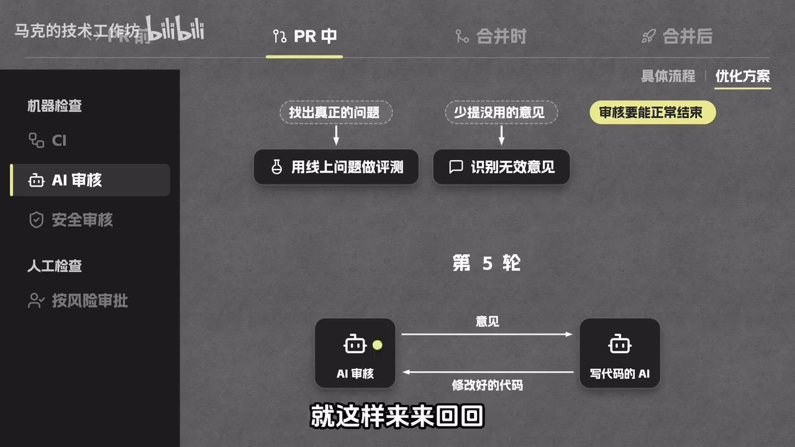

原视频 · 在线回看
点击后联网加载 B 站播放器；本地不下载整段视频。

原视频 · 在线回看
点击后联网加载 B 站播放器；本地不下载整段视频。
来源：如何审核 AI 写的代码？从写代码到上线，一套保证产品质量的全流程
UP 主：马克的技术工作坊 时长：24 分 34 秒 链接：https://www.bilibili.com/video/BV1PznU6YEZE/ 阅读强度：deep
AI 几分钟能写出几千行代码，逐行检查很费时间；完全不看，又很难知道代码有没有按预期工作。只挑“重要部分”也会遇到下一道难题：错误有时藏在看似不起眼的改动里。要把审查做得可持续，关键是让每次改动都经过一串互相补位的检查，再把人的注意力留给那些机器难以判断的决策。
一个功能从写出来到被用户使用，大致经过提交、检查、合并和发布。开发者写完代码后，会提交一个 PR（Pull Request，合并申请），说明希望把这组改动合入主分支。PR 通常先跑自动检查，例如测试，再由其他开发者审查目标是否实现、有没有潜在风险。检查通过后，代码进入主分支；之后仍要经过发布，功能才真正到达用户。合并说明代码已进入共同开发版本，发布才改变用户正在使用的软件。
这套流程可以分为四段：提交 PR 之前、PR 检查中、合入主分支时，以及合入之后逐步发布。AI 参与写代码后，四段的骨架仍然存在，变化的是每个位置如何安排机器检查、AI 判断和人工审批。这样看代码审查，就不会把它当成一次“读完 diff 就结束”的孤立活动；前后的测试和发布措施也共同决定一次改动能否安全上线。
第一步是确认产品功能能运行。AI 可以调用运行程序、打开网页、截图和操作界面等工具，实际走一遍功能，再检查结果是否符合需求。给 AI 一段代码让它“看起来没问题”还不够；让它能启动产品、执行操作并观察结果，才有机会发现代码编译通过但界面无法使用、交互没有反应等运行层面的错误。检查工具要覆盖真正的用户动作，AI 才能验证功能效果。
第二步检查代码质量，例如实现是否符合项目规范、架构是否合理、改动有没有带来风险。原来负责写代码的 AI 手里保留着需求、思考和实现过程；让它回头自审时，它容易沿用原来的解释方式，把实现意图当成实现正确的证据。审查者需要从“代码实际上做了什么”出发重新判断。
为此，团队另开一个全新的 AI agent，只给它目标和相关代码改动，让它判断改动能否达到目标、可能产生哪些风险。新 agent 不知道原 agent 的推理过程，少了沿原先思路自我确认的机会。它仍然是自动审查的一环，结论需要放进后续测试和 PR 检查里一起处理；换一个 agent 并不会让审查自动变成正确答案。
PR 提交之后，第一关是 CI（持续集成）。每次代码改动提交后，CI 会自动运行预先配置的检查，例如代码风格、类型、多平台测试和项目构建。凡是可以稳定自动运行、无需 AI 临场判断的检查，都适合放在这里。它们能快速挡住格式、类型或构建问题，让后续审查把精力放在更需要理解代码行为的判断上。
CI 通过后，AI 审查大体分三步。第一步发现问题：检查 PR 是否达到预定目标、是否能和现有系统协作、会不会影响其他部分。只看新函数自己是否合理还不够，改动还可能影响调用它的代码或其他依赖功能。
第二步过滤低价值意见。若团队长期认为某类意见不影响运行、也无需每次修改，例如一般风格差异或冗余代码，就可以把处理规则写清楚，交给过滤环节识别。这样能减少开发者逐条判断无关意见的时间。过滤规则只适用于团队已经确认不需处理的类别；能否过滤，取决于问题是否会影响运行、维护或行为，而不只看它是否琐碎。
第三步处理留下的问题。每条意见都要有结果：修复，或写明理由后关闭。意见可以标成重要问题、小问题，或改动前就已存在的问题；已有问题虽不由这次 PR 引入，也需要明确回应。只要有未处理意见，PR 就不能继续合并。这样，审查结论会留在 PR 的讨论里，作者和后续维护者也能知道问题怎样处置。
AI 审查还需要用真实事故来衡量。团队把线上出现的问题与引入问题的 PR 配成案例，再组成评测集。评估时把当时的 PR 交给当前审查流程，检查它能否找到对应的真实问题；案例命中记一分，漏掉记零分，累加成基准分。修改提示词、工具或模型后，再用同一批案例比较结果，便能判断调整是否帮助审查找回了更多真实缺陷。
只看找回真实问题的数量会鼓励 AI 多报意见，因为报得越多，命中真实问题的机会也可能越大。开发者却得花时间检查每一条意见，错误警报过多会抵消审查带来的收益。因此还要统计无效意见比例。
一种统计方法是观察 PR 作者如何处理意见：作者按意见修改，通常说明它有帮助；作者指出判断有误、说明原实现是有意设计，或认为无需处理，则被归为无效意见。另一种方法是把确认没有问题的 PR 送进审查流程；这类 PR 上报出的意见通常属于误报。调整审查流程时，要同时看它找到了多少线上缺陷、又制造了多少无效工作。
AI 审查还有可能陷入“提意见—改代码—再提新意见”的循环。有一个 PR 在一夜之间往返修改了五十多轮，说明审核流程可能每次都翻出旧问题，写代码的 AI 也可能始终没有按要求改对。解决办法包括给轮数设边界：来回三轮仍未通过时，先停下来检查整体实现思路，避免继续在局部打补丁。
前几轮仍要检查整个 PR 和受影响的代码。比如 PR 修改一个函数，审查者需要找出项目中调用这个函数的地方，判断改动会不会改变调用方行为。等这轮整体检查已重复多次、主要风险都过了一遍，之后的审核可以收窄到新一轮实际修改的几行。否则每轮都重读整个项目，AI 会继续发现这次改动以前就存在的问题，流程便难以收敛。扩大范围用于初期影响分析，缩小范围用于后续核对新修复，两个阶段承担不同任务。
另外两条规则也让反馈更容易一次解决：同类错误在多处出现时，尽量一轮指出全部位置；之前已经提出的意见，后续不要重复。团队报告称，调整这四条规则后，一轮审查即可通过的 PR 比例从 65% 增至 78%。这个指标表示流程更快结束，评估时还需与缺陷命中率和无效意见比例并看，避免只追求快速通过。
安全审查是另一道单独的自动检查，专门查代码安全问题；发现的问题也必须处置后才能合并。最后一关是按风险审批：文档和文案改动、只供内部员工使用的功能属于低风险，自动检查通过即可；普通产品功能或缓存自动更新等中风险改动需要一位批准者；高风险代码则需要两人批准。计费逻辑和 CI 配置等变更可能造成更大影响，人工把关的人数和强度应随风险提高。
PR 通过检查后，改动进入合并队列。轮到某个 PR 时，系统会把它与当时最新的主分支合在一起再运行测试。若测试通过，才正式合入；下一项 PR 则基于已经包含上一项改动的新主分支接受测试。
这一步能发现单独测试看不出的组合问题：某个 PR 自己运行正常，和别人刚合入的改动放在一起，却可能破坏共同依赖的行为。合并队列逐项验证最新组合状态，失败的改动退回作者处理，主分支因此持续经过测试。
代码进了主分支之后，也不会立刻向所有用户打开。新功能先藏在功能开关后，内部员工先使用；他们频繁使用产品，较容易在普通用户遇到问题前发现缺陷。团队观察一段时间后，再打开面向用户的开关。
发布渠道也分层：新版本先进入 latest，让愿意尝鲜的用户使用；大约一周观察后，团队再把稳定版本推到 stable。这个间隔给团队时间观察真实运行情况。若出现问题，最快的办法是远程关闭功能开关；开关无法解决时，再构建并发布修复版本。分阶段开放配合监测和回滚，可以减少一个未发现问题立刻影响所有用户的机会。
把流程连起来看，一个潜在缺陷要先经过功能运行验证、独立代码审查、CI、AI 审查、安全检查和风险审批；随后在合并队列与最新主分支再次测试，进入内部试用、latest 和 stable，最后仍有监测、关开关和回滚。单个关卡都可能漏掉问题，多种检查从不同角度重复覆盖，才能逐步降低缺陷到达用户端的可能性。团队报告称，6月至9月合并的 PR 数量增长一倍以上，同时需要回滚的比例下降超过40%；这组数字反映的是团队自己的流程表现。
自动流程承担大量执行工作后，人的工作更集中在五类判断。第一，决定做什么功能、产品该有什么方向和品位。第二，亲自审查高风险代码，例如计费和 CI 配置。第三，把关架构，因为一个基础设计一旦被团队反复沿用，错误也可能随复制扩散。
第四，人要读支撑结论的证据：测试输出、运行命令、返回结果、产品截图和 AI 发现。检查者据此判断测试覆盖了什么、结果是否支持改动符合预期，再决定是否接受或要求补充验证。第五，为上线结果负责。代码由 AI 生成，也仍然需要人对发布决策和用户影响承担责任。
这套流程的目标，是让机器和 AI 执行重复的检查与代码工作，同时把人的时间留给需求取舍、高风险判断、架构、证据审阅和责任承担。审查 AI 代码因此不仅是找错，也是在决定哪些证据足以支持上线、哪些后果必须由人来判断。
代码审查嵌在完整发布链路中：提交前验证功能并用新上下文检查代码；PR 阶段组合 CI、AI 审查、安全检查和按风险审批；合并队列在最新主分支上复测；合并后通过功能开关、分渠道发布、监测和回滚控制影响范围。AI 审查要同时衡量真实缺陷命中和无效意见，避免持续迭代失去边界。人的注意力集中在产品方向、高风险代码、架构、证据和结果责任上。